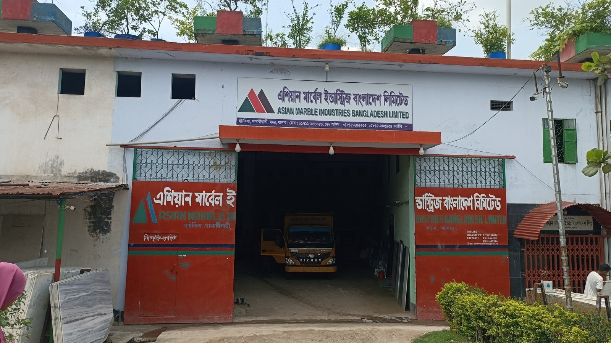

Asian Marble Industries Bangladesh Ltd.
A comprehensive Industrial Energy Audit & Demand Analysis Report conducted on May 22, 2025 for Asian Marble Industries Bangladesh Ltd. (Hatbila, Narendrapur / Rupdia Bazar, Jashore). Supervised by Dr. Engr. Imran Khan (Chairman, Department of Electrical and Electronic Engineering, Jashore University of Science and Technology), the audit analyzed energy flow across a 118,603 sq ft manufacturing complex consuming 273,252 kWh/year. The investigation evaluated low power factor penalties (<0.90 PF), motor drive slip ratios (150 HP gang saw rated at 1,489 RPM vs 729 measured RPM), closed-loop water recirculation (5 × 1.5 HP pumps running 10 hrs/day), and formulated prioritized conservation measures capable of yielding 10%–15% monthly electricity bill reductions.

22,771 kWh/month grid electricity consumption supplied via a dedicated 11 kV 3-phase substation transformer.
Direct monthly billing savings achievable by upgrading degraded PFI capacitor cells to restore power factor to >0.95.
Alstom 3-phase motor (192 A, 415 V) rated at 1,489 RPM with 729 RPM measured at driven pulley (49.19% reduction ratio).
Operating 12 hrs/day (Friday off), producing 2,000 ft/month across block sawing, polishing, and craft showpiece production.
Field Energy Audit Photo Gallery & Equipment Log
Complete photographic logging from the audit walkthrough—capturing the 11 kV transformer, PFI capacitor panel, 110 kW Alstom gang saw drive, digital tachometer RPM checks, automated slab polishing line, dual-segment settling ponds, and the 4-member delegation.
Academic Framework & Institutional Context
This field energy audit was conducted as part of the academic curriculum for EEE-4121: Energy Management & Efficiency, under the Department of Electrical and Electronic Engineering (EEE), Jashore University of Science and Technology (JUST). The investigation was supervised by Dr. Engr. Imran Khan (Associate Professor & Chairman, Dept. of EEE, JUST), and performed on-site with the full cooperation and official sign-off of Asian Marble Industries Bangladesh Ltd.
Industrial Process Flow & Plant Profile
Asian Marble Industries operates across 118,603 sq ft of processing sheds and slab yards. The operating schedule spans 12 hours per day (with Friday off), supported by 4 executives, 20 factory operators, 1 resident engineer, and an electrician responsible for energy monitoring (Md. Asmat Ali). Production averages 2,000 ft/month (~15 quarried boulders).
Key Equipment Inventory & Measured Load Profiles
The following table synthesizes the major mechanical and electrical loads audited on-site, compiled from machinery rating plates, digital tachometry, and field logs:
| Equipment / Subsystem | Rated Rating | Operating Details & Measured Data | Audit Status |
|---|---|---|---|
| Primary Marble Gang Saw | 150 HP (110 kW) | Alstom 3-phase motor, 415V, 192A. Rated 1,489 RPM; Tachometer measured 729 RPM on driven pulley (49.19% pulley reduction). | Audited |
| Multi-Cutter Sawing Systems | 60 HP (45 kW) | Secondary block slitting and edge trimming with multiple circular diamond blades and water lubrication. | Audited |
| Overhead Crane & Winch Gantry | 10 HP, 5 HP, 5 HP | Heavy winch drum and reduction gearbox maneuvering multi-ton raw blocks across 118,603 sq ft floor. | Audited |
| Marble Polishing Lines | 7.5 HP, 5 HP, 5 HP | Continuous conveyor line with articulated radial arm polishers processing marble slabs and tiles. | Audited |
| Water Recirculation Pumping | 5 × 1.5 HP (7.5 HP) | Continuous 10 hrs/day pumping from dual-segment sedimentation pond for closed-loop cutting blade coolant. | Needs Automation |
| Power Factor Improvement (PFI) | Capacitor Bank | Plant power factor is currently <0.90 due to degraded capacitor cells, resulting in recurring utility penalties. | Critical Upgrade |
| Compressed Air & Auxiliaries | Belt-Driven Unit | Horizontal receiver tank supplying pneumatic clamping for bridge saws; decentralized without central line. | Manual |
| Lighting Network | ~60 LED (25W–85W) | Manual switching only; illuminance target is 300–500 lux; recommended motion sensor retrofits in low-use aisles. | Needs Retrofit |
Detailed Subsystem Audit Observations
The plant is fed by a dedicated 11 kV three-phase transformer. Distribution wiring in PVC conduits displays noticeable signs of local overheating and aged insulation. The main switchboards are aging and lack automated thermal tripping or surge protection, requiring structured refurbishment.
Digital non-contact tachometry on the 110 kW (150 HP) Alstom gang saw confirmed rated motor shaft speed of 1,489 RPM and driven sheave speed of 729 RPM (speed reduction ratio of 49.19%). Ensuring proper belt tensioning prevents transmission slippage and reduces parasitic thermal losses.
The factory features a self-sufficient dual-segment settling basin replenished by rainwater harvesting. 5 × 1.5 HP pumps recirculate clarified water 10 hours daily. 15 kg/day of marble dust slurry is manually extracted; automating pump cycling will eliminate unneeded pumping hours.
Natural cross-ventilation is assisted by 11 exhaust fans (75–100W) spaced 7–25 ft apart. Office spaces utilize 3 × 12,000 BTU ACs. The facility has 3 fire extinguishers but lacks hazard signage, emergency alarm systems, and mandatory PPE for machine operators.
Prioritized Energy Saving Recommendations
The energy audit report established a prioritized implementation roadmap organized into High, Medium, and Long-Term strategic actions:
| Action Area | Specific Recommendation | Priority | Expected Impact |
|---|---|---|---|
| Power Factor Correction | Upgrade PFI capacitor bank cells and microprocessor controller to achieve PF > 0.95. | High | 10%–15% bill reduction; eliminates utility penalties |
| Wiring & Switchboard | Replace aging switchgear panels and overheating PVC conduit feeder wiring. | High | Prevents thermal runaway, electrical fire risk, and line I²R loss |
| Industrial Safety & Signage | Install safety signs, hazard symbols, expand fire extinguishers, and enforce operator PPE. | High | Ensures compliance, worker protection, and operational continuity |
| Pump System Automation | Introduce automated float level switch controls for 5 × 1.5 HP slurry recycling pumps. | Medium | Eliminates 2–3 hours/day unneeded idling pumping losses |
| Lighting Automation | Retrofit motion sensors and timers in low-traffic slab yard and material storage sheds. | Medium | Reduces lighting kWh consumption by 30% in warehouse aisles |
| Compressed Air Optimization | Conduct ultrasonic leak detection routines and optimize operating pressure setpoints. | Medium | Reduces compressor duty cycle and energy draw |
| Energy Management System (EMS) | Implement continuous smart sub-metering telemetry on primary gang saws and feeder lines. | Long-term | Enables dynamic demand tracking, peak clipping, and predictive maintenance |
| Rooftop Solar PV Feasibility | Evaluate net-metered rooftop solar photovoltaic array across 118,603 sq ft structure. | Long-term | Offsets grid dependency during daytime peak production hours |
Instruments Recommended for Future Advanced Audits
Audit Delegation & Faculty Supervision
The field investigation and comprehensive reporting were completed under the academic supervision and authorship of: